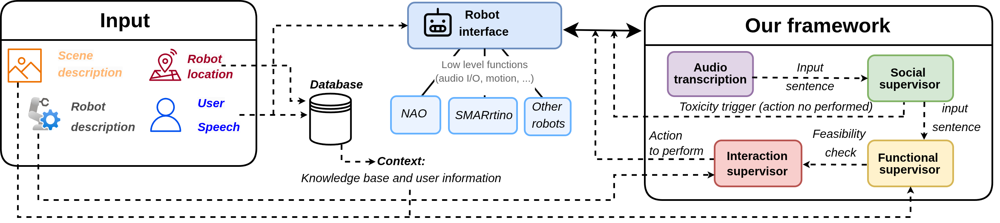

My research focuses on integrating Large Language Models with social and industrial robotics. During my first year of my PhD, I developed a cognitive architecture to enhance robot interaction capabilities in terms of context-constant and safety.
The architecture's modular structure allows for the management of different aspects of a conversation between a human and a robot.
Each module of the architecture is called a Supervisor and handles a specific task. Some components of the architecture (constantly expanding thanks to its modularity) are:
- Social Supervisor: ensures that the conversation contains socially acceptable and safe topics
- Database module: leverages the data contained in the robot's long-term memory using RAG techniques to provide more accurate and context-constant responses.
- Functional Supervisor: combines the long-term information returned by the robot's memory with the common-sense knowledge present in the LLMs to determine the safety and feasibility of what is occurring.
- Interaction Supervisor: manages the robot's output, which is embodied in what the robot does, says, and the emotions or feedback it displays to the user.

The architecture is designed to reason at a high level and be robot-agnostic. The only input information it requires is a natural language description of the robot and the actions it can perform, and some information about the domain in which it operates.
Thanks to this description and the reasoning performed by supervisors, it will be able to identify the actions a robot can or cannot perform, based on the robot's physical limitations and the safety criteria provided.
This work led to the publication of
A Cognitive Architecture for Embodied AI based on LLM Common-sense Knowledge
For this work, a communication test between two robots mounting the same cognitive architecture was done.
Subsequently, I worked on integrating this architecture into a collaborative/industrial context.
Focusing on a use case involving a UR5e collaborative robot for dishwashing, I designed the architecture so that a user with no programming or robotics experience could control the robot using natural language.
Thanks to the robot's long-term memory and the reasoning of its supervisors, it is possible to teach it how to perform a given task according to specific parameters. The robot can then remember the execution details of each task, such as the force to use or the type of movement to apply when washing a specific type of dish.
This work led to the publication of a short paper titled
A Use Case of Natural Language Programming for Industrial Robots.
The resulting framework allows for a constant feedback loop between the human observing the robot's behavior and the robot modifying its behavior according to the human's instructions, storing the current behaviors in memory.